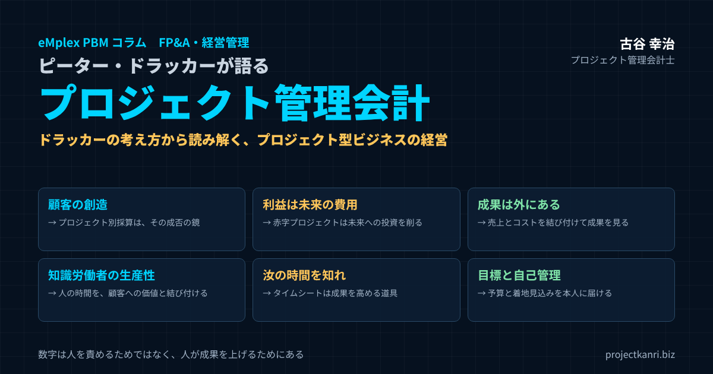

ピーター・ドラッカーが語るプロジェクト管理会計―「顧客の創造」「知識労働者の生産性」「汝の時間を知れ」から読み解くプロジェクト型ビジネスの経営

結論：ドラッカーの考え方は、プロジェクト管理会計の「なぜ」に答えてくれる
この記事の要点
- 顧客の創造：プロジェクトは顧客を創造する単位。プロジェクト別採算はその成否を映す鏡
- 利益は条件：プロジェクトの利益は未来の費用。赤字プロジェクトは未来への投資を削る
- 成果は外にある：コストの計算だけでなく、売上と結び付けて初めて成果が見える
- 知識労働者の生産性と「汝の時間を知れ」：タイムシートは時間を知り、成果を高めるための道具
- 目標と自己管理・体系的廃棄・強み：現場が自ら見る予算、数字に基づく撤退と集中
プロジェクト管理会計士の古谷です。今回は、少し趣向を変えて、経営学の父と呼ばれるピーター・ドラッカーの考え方から、プロジェクト管理会計を読み解いてみたいと思います。
最初にお断りしておきます。ドラッカーは、「プロジェクト管理会計」という言葉を使ったわけではありません。彼が会計について体系的な理論を残したわけでもありません。本稿のタイトルにある「ドラッカーが語る」とは、彼が残したマネジメントの考え方を手がかりに、私がプロジェクト管理会計の意味を読み解く、という意味です。
それでも、あえてドラッカーを取り上げるのには理由があります。プロジェクト管理会計の仕組みを支援先で導入していると、必ずといってよいほど、現場から「なぜ」という問いが返ってきます。なぜ工数を毎日記録しなければならないのか。なぜプロジェクトごとに利益を見なければならないのか。なぜ予算を自分で立てなければならないのか。こうした問いに、手法の説明だけで答えても、現場の納得は得られません。
ドラッカーの考え方は、この「なぜ」に答えてくれます。事業の目的は顧客の創造であること。利益は目的ではなく、事業が存続するための条件であること。成果は組織の外にあり、内部にあるのはコストだけであること。知識労働者の生産性こそが、これからの経営の最大の課題であること。成果を上げる人は、自分の時間を知ることから始めること。こうした考え方の一つひとつが、プロジェクト管理会計の仕組みの意味を、手法ではなく経営の言葉で説明してくれるのです。
結論から申し上げます。プロジェクト管理会計とは、ドラッカーが説いた「知識労働者の時間という資源を、顧客の創造という成果に結び付け、その結果を測り、次の判断に活かす」ための仕組みです。本稿では、ドラッカーの代表的な考え方を一つずつ取り上げながら、それがプロジェクト管理会計のどの仕組みにつながっているのかを、実務の視点でお伝えします。
ピーター・ドラッカーとは：マネジメントを体系化した思想家
ピーター・F・ドラッカーは、1909年にオーストリアのウィーンで生まれ、2005年に米国カリフォルニア州のクレアモントで亡くなった経営学者であり、社会思想家です。企業を社会の機関として捉え、マネジメントを一つの体系として確立したことから、マネジメントの父とも呼ばれます。
日本では、とりわけ経営者の間で広く読まれてきました。高度経済成長期の多くの経営者が、ドラッカーの著作から学んだと語っています。私自身も、朋友建設で社会に出たばかりの頃から、エンプレックスでCFOを務めた時期、そして独立してからも、節目ごとにドラッカーの著作を読み返してきました。
| 著作（邦題） | 原題 | 本稿で取り上げる考え方 |
|---|---|---|
| 『現代の経営』（1954年） | The Practice of Management | 事業の目的は顧客の創造、目標と自己管理によるマネジメント |
| 『創造する経営者』（1964年） | Managing for Results | 成果と資源は外部にあり、内部にあるのはコストだけ |
| 『経営者の条件』 | The Effective Executive | 汝の時間を知れ、強みを生かす |
| 『明日を支配するもの』（1999年） | Management Challenges for the 21st Century | 知識労働者の生産性と6つの条件 |
| 論文「経営者が本当に必要とする情報」（1995年） | The Information Executives Truly Need | 従来の原価計算の限界と、経営者に必要な情報 |
本稿で主に取り上げるのは、『現代の経営』で示された事業の目的と目標による管理、『創造する経営者』で示された成果と資源の考え方、『経営者の条件』で示された時間の管理と強みの活用、そして『明日を支配するもの』で示された知識労働者の生産性です。いずれも、プロジェクト型ビジネスの経営に、今なお直接響く内容です。
ドラッカーの著作の多くは、半世紀以上前に書かれたものです。それでも今なお読み継がれているのは、彼が個別の手法ではなく、組織と人と成果の関係という、時代を越えて変わらない本質を論じたからだと思います。プロジェクト型ビジネスという、ドラッカーの時代にはまだ一般的ではなかった事業の形にも、その本質はそのまま当てはまります。
「事業の目的は顧客の創造である」：プロジェクトは顧客を創造する単位
ドラッカーの考え方の出発点にあるのが、『現代の経営』で示された、事業の目的は顧客の創造である、という定義です。事業の目的を利益の追求と考えるのではなく、顧客を創造することに置く。そして、顧客を創造するための基本的な機能は、マーケティングとイノベーションの二つであると説きました。
この考え方を、プロジェクト型ビジネスに当てはめてみます。システム開発、コンサルティング、建設、広告や映像の制作。こうしたビジネスでは、顧客が価値を感じ、対価を支払う単位が、一つひとつのプロジェクトです。顧客は、会社全体と取引しているというよりも、自分の課題を解決してくれるプロジェクトに対価を支払っています。つまり、プロジェクトこそが、顧客を創造する単位なのです。
そう考えると、プロジェクト管理会計の意味が見えてきます。プロジェクトごとに売上と原価と利益を見ることは、単に会計の細かさの問題ではありません。どのプロジェクトが顧客に価値を届け、その対価として正当な利益を生んでいるのか。言い換えれば、どこで顧客の創造に成功しているのかを確かめることなのです。
プロジェクトの採算が悪いということは、多くの場合、顧客にとっての価値と、自社が投じた資源とが釣り合っていないことを意味します。顧客が求めていない作業に時間をかけているのかもしれません。顧客が価値を感じている部分に、正当な対価を求められていないのかもしれません。プロジェクトの数字は、顧客の創造がうまくいっているかどうかを映す鏡なのです。
顧客の創造という視点に立つと、プロジェクトの完了は終わりではなく、次の顧客の創造の始まりでもあります。プロジェクトを通じて顧客の信頼を得れば、次の案件や、新しい顧客の紹介につながります。プロジェクトの採算を、その一件だけでなく、顧客との関係全体の中で捉えることも大切です。
マーケティングとイノベーション：受注の前と、プロジェクトの後
ドラッカーは、顧客を創造するための基本的な機能として、マーケティングとイノベーションの二つを挙げました。マーケティングとは、顧客を理解し、顧客が求めるものから出発することです。イノベーションとは、新しい価値を生み出すことです。
プロジェクト型ビジネスで言えば、マーケティングは、受注の前の段階に深く関わります。どの顧客の、どのような課題を引き受けるのか。その判断を誤れば、どれほど丁寧にプロジェクトを管理しても、利益は生まれません。プロジェクト管理会計の数字は、ここでも役に立ちます。過去のプロジェクトの採算を、顧客の業界や課題の種類ごとに分析すれば、自社が価値を届けやすい顧客と、そうでない顧客が見えてきます。それは、次にどの顧客に向き合うべきかという、マーケティングの判断の材料になります。
一方、イノベーションは、プロジェクトの後に生まれることが少なくありません。あるプロジェクトで生み出した解決の方法を、別の顧客にも提供できる形にする。繰り返し発生する作業を、仕組みや製品にする。プロジェクトの振り返りの中で、こうした新しい価値の芽を見つけ、育てていく。プロジェクト管理会計は、どのプロジェクトのどの工夫が成果を生んだのかを示すことで、イノベーションの種を見つける手がかりにもなるのです。
利益は目的ではなく「条件」である：プロジェクトの利益は未来の費用
ドラッカーは、利益を事業の目的とは考えませんでした。しかし、利益を軽んじたわけでもありません。むしろ、利益は事業が存続し、未来に向けて投資を続けるための条件であり、利益がなければ事業は続かないと強調しました。利益は、未来のための費用であり、事業を続けるためのコストだと考えたのです。
この考え方は、プロジェクト型ビジネスにとって、とても重い意味を持ちます。プロジェクトで生まれた利益は、次の人材の採用と育成、新しい技術への投資、そして事業の失敗に備える蓄えの原資になります。赤字のプロジェクトは、その期の業績を悪くするだけではありません。会社が未来に投じるはずだった資源を、静かに削っていくのです。
私が新卒で入った朋友建設は、後に和議という局面を迎えました。工事ごとの採算が見えないまま、売上を追い続けた結果でした。売上があっても、利益がなければ、会社は未来に投資することができず、やがて立ち行かなくなる。ドラッカーが利益を事業の存続の条件と呼んだ意味を、私はそのとき身をもって知りました。
プロジェクト管理会計が、プロジェクトごとの粗利を重視するのは、利益そのものを崇めるためではありません。一つひとつのプロジェクトが、会社の未来の費用をきちんと稼いでいるかを確かめるためです。粗利率のアラートや着地見込みの管理は、未来の費用を守るための仕組みなのです。
ドラッカーの考え方に立てば、プロジェクトの価格を決めるときにも、利益を未来の費用として正しく織り込む必要があります。原価に少しの利益を上乗せしただけの価格では、人材の育成や新しい技術への投資に回す原資が生まれません。自社が未来に向けて必要とする投資から逆算して、プロジェクトに求める粗利の水準を決める。それが、利益を条件として捉える経営の姿です。
「成果は外にある、内部にあるのはコストだけ」：原価計算だけでは成果は見えない
『創造する経営者』の中で、ドラッカーは、成果も資源も事業の内部には存在しない、どちらも外部に存在すると述べました。事業の内部にあるのは、コストだけである。成果は、外部の顧客が製品やサービスに対価を支払うことによって、初めて生まれるのだ、と。
この指摘は、管理会計に携わる者にとって、耳の痛いものです。私たちは、どうしても内部の数字、つまりコストの計算に意識を向けがちです。原価を正確に計算すること、配賦の方法を精緻にすること。それ自体は大切な仕事ですが、コストをどれだけ正確に計算しても、それだけでは成果は見えません。
プロジェクト管理会計が、コストの計算だけでなく、売上と利益をプロジェクトごとに対応させるのは、まさにこのためです。コストは内部の数字ですが、売上は外部の顧客が支払った対価です。プロジェクトという単位で、外部の成果である売上と、内部のコストを結び付けて初めて、成果が見えるようになります。
さらに一歩進めると、プロジェクト単位だけでなく、顧客単位、事業単位で成果を見ることも大切です。同じ顧客から繰り返し受注しているのか、その顧客との取引全体で利益が出ているのか。どの事業領域で、顧客の創造に成功しているのか。成果を外部の視点から捉え直すことで、管理会計は、コストの計算から、経営の判断のための情報へと変わっていきます。
| 視点 | 見るもの | プロジェクト管理会計での扱い |
|---|---|---|
| 内部（コスト） | 労務費・外注費・経費 | 工数×コストレート、外注・経費をプロジェクトに集計 |
| 外部（成果） | 顧客が支払った対価 | プロジェクトの売上、顧客別・事業別の売上 |
| 結び付けた結果 | 顧客の創造の成否 | プロジェクト別・顧客別・事業別の粗利と粗利率 |
外部の視点は、プロジェクトの完了の後にも大切です。プロジェクトの数字が黒字でも、顧客が満足しておらず、次の取引につながらないのであれば、それは本当の意味での成果とは言えません。プロジェクト管理会計の数字に、顧客からの評価や、その後の取引の継続という外部の情報を重ねて見ることで、成果をより正しく捉えることができます。
知識労働者の時代：人の時間が原価になるビジネス
ドラッカーは、知識を道具として働く人々を「知識労働者」と呼び、彼らが社会と経済の中心になる時代が来ることを、早くから予見していました。肉体の力ではなく、知識によって価値を生み出す人々です。
プロジェクト型ビジネスは、まさに知識労働者のビジネスです。エンジニア、コンサルタント、設計者、デザイナー、プロジェクトマネージャー。彼らが生み出すのは、形のある製品ではなく、知識を使った成果物やサービスです。そして、その原価の大部分は、知識労働者の人件費、つまり彼らの時間です。
製造業の原価計算は、材料と機械と、肉体労働者の作業時間を測ることから発展してきました。しかし、知識労働者の仕事は、同じように測ることができません。同じ時間をかけても、生み出す価値は人によって、仕事によって大きく異なります。だからこそ、知識労働者のビジネスには、知識労働者のための管理会計が必要なのです。
プロジェクト管理会計は、知識労働者の時間を、プロジェクトという単位で、顧客への価値と結び付けて測る仕組みだと言えます。どの知識労働者の時間が、どの顧客のどのプロジェクトに使われ、それがどれだけの売上と利益を生んだのか。それを測ることで初めて、知識労働者の生産性を議論することができるようになります。
知識労働者の時間には、もう一つの特徴があります。それは、本人以外には、その時間の使い方が見えにくいということです。工場で働く人の作業は、外から見ることができますが、知識労働者が画面に向かって考えている時間が、どのプロジェクトの、どの課題に使われているのかは、本人にしか分かりません。だからこそ、本人が自ら時間を記録する仕組みが必要になるのです。
知識労働者の生産性：ドラッカーが挙げた6つの条件とプロジェクト管理会計
ドラッカーは、晩年の著作『明日を支配するもの』の中で、20世紀の経営の最大の功績は肉体労働の生産性を高めたことであり、21世紀の経営に求められる最大の貢献は、知識労働と知識労働者の生産性を高めることだと述べました。そして、知識労働者の生産性を高めるための条件として、六つの要素を挙げています。
| ドラッカーの条件 | プロジェクト管理会計での実践 |
|---|---|
| ① 仕事の目的を明らかにする | プロジェクトの範囲・目的・成果の基準を明確にする |
| ② 生産性への責任と自律性 | PMが自分のプロジェクトの予算・実績・着地を自ら把握し判断する |
| ③ 継続的なイノベーション | 進め方や見積の方法を、プロジェクトごとに改善する |
| ④ 継続的な学習と教育 | 完了後の収支レビューで学びを次の見積に返す |
| ⑤ 量だけでなく質で測る | 工数だけでなく売上・粗利・顧客の評価をあわせて見る |
| ⑥ コストではなく資産として扱う | 人の時間がどれだけの価値を生んでいるかを明らかにする |
※条件の整理は『明日を支配するもの』にもとづく筆者の要約です。
一つ目は、仕事の目的を明らかにすることです。肉体労働では、何をすべきかは決まっています。しかし知識労働では、まず「何が仕事か」を問わなければなりません。プロジェクト管理会計の文脈で言えば、プロジェクトの範囲と目的、そして成果の基準を明確にすることです。範囲が曖昧なまま始まったプロジェクトは、工数が膨らみ、赤字に向かいます。
二つ目は、知識労働者に自らの生産性への責任を持たせ、自律性を与えることです。プロジェクトマネージャーが、自分のプロジェクトの予算と実績を自ら把握し、判断できる状態をつくる。数字を経理だけが持っているのではなく、現場の責任者が自分の数字として持つ。これが、プロジェクト管理会計が目指す姿です。
三つ目は、継続的なイノベーションを仕事の一部にすることです。四つ目は、継続的に学び、教えることです。完了したプロジェクトの収支を振り返り、見積の精度を上げ、その学びを次のプロジェクトに活かす仕組みは、まさに組織としての継続的な学習です。
五つ目は、知識労働の生産性は、量だけでなく質で測らなければならないということです。工数をどれだけ減らしたかだけでなく、顧客にどれだけの価値を届けたかを見る必要があります。プロジェクト管理会計で、工数だけでなく、売上と粗利をあわせて見るのは、この質の側面を捉えるためです。
そして六つ目は、知識労働者をコストではなく資産として扱うことです。ここに、プロジェクト管理会計の大切な示唆があります。人件費をプロジェクトの原価として計算することは、人をコストとして見ることのように思えるかもしれません。しかし、その目的は、人の時間がどれだけの価値を生んでいるかを明らかにすることにあります。知識労働者の時間という資産が、最も価値を生む使われ方をしているかを確かめる。それが、知識労働者を資産として扱う管理会計の姿なのです。
六つの条件を並べてみると、プロジェクト管理会計が、単に原価を計算する仕組みではないことが分かります。仕事の目的を明らかにし、責任と自律性を与え、学習を促し、質を測り、人を資産として扱う。これは、知識労働者が成果を上げるための環境そのものです。数字の仕組みは、その環境を支える土台なのです。
「汝の時間を知れ」：タイムシートはドラッカーの教えそのもの
『経営者の条件』の中で、ドラッカーは、成果を上げる人は、仕事からではなく、時間からスタートすると述べました。そして、時間を記録し、時間を管理し、時間をまとめるという三つの段階を示しました。「汝の時間を知れ」という言葉で知られる教えです。
ドラッカーが強調したのは、人は自分の時間の使い方を、驚くほど正確に把握していないということです。記憶に頼って時間の使い方を振り返ると、実際とは大きく異なる。だからこそ、時間を記録することから始めなければならない、と。
| ドラッカーの3段階 | 内容 | タイムシートでの実践 |
|---|---|---|
| ① 時間を記録する | 記憶ではなく記録で時間の使い方を知る | 日次で、どのプロジェクトのどの作業に使ったかを記録 |
| ② 時間を管理する | 成果につながらない仕事を見つけ、捨て、任せる | 会議・手戻り・待機の時間を分析し、減らす |
| ③ 時間をまとめる | 自由に使える時間を、まとまった単位にする | 価値を生むプロジェクトに時間を集中させる |
これは、プロジェクト管理会計におけるタイムシートの考え方と、まったく同じです。プロジェクト型ビジネスでは、社員の時間が、どのプロジェクトのどの作業に使われたのかを記録しなければ、原価も生産性も分かりません。そして、記録してみると、多くの会社で、想定していた以上の時間が、社内の会議や調整、手戻りや待機に使われていることが分かります。
ドラッカーは、時間を記録した後に、成果につながらない仕事を見つけて捨て、他の人に任せられる仕事を任せ、そして残った時間をまとまった単位にまとめよ、と説きました。タイムシートの記録も、同じように使うべきです。記録すること自体が目的ではなく、記録した時間を分析し、成果につながらない時間を減らし、価値を生むプロジェクトに時間を集中させる。そのための材料なのです。
私が支援先でタイムシートの導入を進めるとき、現場からは「管理されるのは嫌だ」という声が上がることがあります。そのとき、私はドラッカーのこの教えを紹介します。タイムシートは、会社が社員を監視するための道具ではなく、一人ひとりが自分の時間を知り、自分の成果を高めるための道具なのだ、と。この説明で、現場の受け止め方が変わることは少なくありません。
時間の記録を始めると、多くの経営者自身が、自分の時間の使い方に驚きます。自分では顧客や戦略のことに時間を使っているつもりでも、実際には社内の調整や報告の確認に多くの時間が消えている。経営者自身がまず自分の時間を記録してみることは、タイムシートを組織に根付かせるための、最も説得力のある第一歩です。
能率よりも成果：正しいプロジェクトに時間を使っているか
ドラッカーは、能率と成果を区別しました。能率とは、物事を正しく行うことです。成果とは、正しいことを行うことです。そして、知識労働者にとって大切なのは、能率よりも成果だと説きました。
この区別は、プロジェクト管理会計の数字の読み方に、大切な視点を与えてくれます。多くの会社では、工数の削減、つまり能率の向上に関心が向きがちです。同じ成果物を、より少ない工数でつくる。それ自体は大切なことです。しかし、そもそも採算の合わないプロジェクトに、能率よく時間を使っても、成果は生まれません。
プロジェクト管理会計の数字が問いかけるべきは、まず、正しいプロジェクトに時間を使っているかどうかです。顧客にとって価値が高く、自社の強みが生き、正当な利益が得られるプロジェクトに、組織の時間が集中しているか。そのうえで、一つひとつのプロジェクトを能率よく進めているか。この順番を間違えないことが、知識労働者の成果を高める鍵になります。
| 順番 | 問い | 見る数字 |
|---|---|---|
| ① 成果（正しいことを行う） | 正しいプロジェクトに時間を使っているか | プロジェクト種類別・顧客別の粗利率、強みの領域への工数の集中度 |
| ② 能率（物事を正しく行う） | そのプロジェクトを能率よく進めているか | 見積と実績の工数の差、手戻りの工数、稼働率 |
「測定できないものは管理できない」はドラッカーの言葉か
ここで、一つ触れておきたいことがあります。「測定できないものは管理できない」という言葉は、しばしばドラッカーの言葉として紹介されます。管理会計の分野でも、よく引用される言葉です。しかし、この言葉は、ドラッカーの著作の中には見当たらないという指摘が、ドラッカーの研究者などからなされています。
むしろドラッカーは、測定の大切さを説く一方で、測定には限界があることも繰り返し述べています。数字で測れるものだけを見ていると、数字で測れない大切なもの、たとえば顧客との信頼関係や、人の成長、組織の文化を見失う。そして、何を測るかによって、人の行動が変わってしまうことにも注意を促しました。
プロジェクト管理会計に携わる者として、この点はとても大切だと考えています。プロジェクトの粗利や工数は、確かに重要な指標です。しかし、それだけを追いかけると、短期的な数字のために、顧客との長期的な関係や、社員の育成を犠牲にすることになりかねません。数字は判断の材料であって、判断そのものではない。測定の限界を知ったうえで、数字を使うことが大切です。
私は支援先で、指標を決めるときに、必ずその指標によって人の行動がどう変わるかを話し合うようにしています。たとえば、稼働率だけを目標にすれば、社員は採算の悪い案件でも時間を埋めようとするかもしれません。粗利率だけを目標にすれば、難しいが将来につながる案件を避けるかもしれません。複数の指標を組み合わせ、数字の背後にある意図を共有することが、測定の弊害を防ぐ方法です。
目標と自己管理によるマネジメント：プロジェクト予算は「自己管理」の道具
『現代の経営』でドラッカーが提唱したのが、目標と自己管理によるマネジメントです。目標による管理、MBOとして知られる考え方ですが、ドラッカーが強調したのは、目標で人を管理することではなく、目標によって人が自らを管理することでした。
この考え方は、プロジェクトの予算の位置づけに、大切な示唆を与えてくれます。多くの会社で、予算は、上から与えられ、それを守れたかどうかで評価される統制の道具として扱われています。しかし、ドラッカーの考え方に立てば、予算は、プロジェクトの責任者が自ら目標を設定し、自らの進み具合を測り、自ら軌道を修正するための道具であるべきです。
そのためには、プロジェクトの責任者が、自分のプロジェクトの予算と実績、着地見込みを、いつでも自分で確かめられる必要があります。ドラッカーは、自己管理のためには、自らの成果を測定するための情報が必要であり、その情報は上司ではなく本人に届けられなければならないと説きました。プロジェクト管理会計の数字を、経理や経営だけが見るのではなく、現場の責任者に届けることの意味は、ここにあります。
| 項目 | 統制のための予算 | 自己管理のための予算（ドラッカー的） |
|---|---|---|
| 誰がつくるか | 上から与えられる | 責任者が自ら立て、合意する |
| 数字を見る人 | 経理・経営 | プロジェクトの責任者自身 |
| 使われ方 | 守れたかどうかの評価 | 自ら進み具合を測り、軌道を修正する |
| 気づくタイミング | 上司からの指摘 | 数字を見た本人が自ら気づく |
数字が本人に届けば、行動が変わります。予算の消化が進捗を上回っていることに自分で気づけば、自分で手を打つことができます。上司から指摘されて初めて気づくのとでは、主体性も、手を打つ速さも、まったく違います。プロジェクト管理会計は、目標と自己管理によるマネジメントを、プロジェクトの単位で実現する仕組みなのです。
ドラッカーは、自己管理のための情報は、責めるための道具であってはならないとも考えていました。数字が人を責めるために使われる組織では、人は数字を隠し、ごまかすようになります。数字が自分を助けてくれるものだと感じられる組織で、初めて自己管理は機能します。
貢献に焦点を合わせる：プロジェクトマネージャーに問うべきこと
ドラッカーは、成果を上げる人は、自分の仕事ではなく、自分がどのような貢献ができるかに焦点を合わせると述べました。自分の努力ではなく、組織の成果に対して何ができるかを問う。その姿勢が、仕事の質を変えるのだ、と。
プロジェクトマネージャーに、この問いを向けてみてください。あなたのプロジェクトは、顧客にどのような貢献をしているのか。会社の成果に、どのような貢献をしているのか。プロジェクト管理会計の数字は、この問いに答えるための材料になります。顧客の評価と、プロジェクトの粗利。この二つが揃って、初めてプロジェクトの貢献が見えます。
プロジェクトマネージャーが、自分のプロジェクトの数字を、自分の貢献を示すものとして受け止められるようになれば、数字との向き合い方が変わります。数字は、評価されるためのものではなく、自分の貢献を確かめ、高めるためのものになります。そうした組織では、赤字の兆候も、責められるのを恐れて隠されるのではなく、貢献を高めるための課題として、早く共有されるようになります。
体系的廃棄：不採算のプロジェクトと顧客から、計画的に手を引く
ドラッカーが繰り返し説いた考え方の一つに、体系的な廃棄があります。新しいことに資源を投じるためには、成果を生まなくなった古いことを、計画的にやめなければならない。昨日の成功にしがみつく組織は、明日の機会を逃す、と。
プロジェクト型ビジネスにも、やめるべきものがあります。採算の合わない種類のプロジェクト、利益を生まない顧客との取引、手間ばかりかかって成果につながらない社内の業務。しかし、多くの会社では、こうしたものが、昔からの付き合いや、売上を減らしたくないという理由で、続けられています。
体系的な廃棄を行うためには、まず、何が成果を生んでいないのかを、数字で知る必要があります。プロジェクトの種類ごと、顧客ごと、事業ごとの採算を見れば、どこに資源が投じられ、どこで成果が生まれ、どこで成果が生まれていないのかが見えてきます。感覚ではなく数字で示されれば、やめるという難しい判断にも、根拠を持って臨むことができます。
| 見る単位 | 廃棄・見直しの候補 |
|---|---|
| プロジェクトの種類別 | 粗利率が継続して低い、見積と実績の差が大きい種類 |
| 顧客別 | 取引全体で利益が出ていない、追加要望の無償対応が多い顧客 |
| 事業別 | 資源を投じても成果が伸びない事業領域 |
| 社内業務 | 工数を多く使うが成果につながらない会議・報告・手作業 |
もちろん、数字だけで機械的に判断すべきではありません。今は採算が合わなくても、将来の大きな取引につながる顧客もあります。ドラッカーも、廃棄の判断には、その事業が将来どうなるかという見通しが必要だと考えていました。大切なのは、採算の合わない取引を、理由もなく惰性で続けることをやめ、続けるなら続ける理由を、やめるならやめる理由を、数字をもとに明確にすることです。
体系的な廃棄は、プロジェクトの途中にも当てはまります。プロジェクトの中で、当初の計画にあった作業のうち、顧客にとっての価値が小さいことが分かったものは、顧客と協議のうえで範囲から外す。成果につながらない作業を続けることは、時間という最も貴重な資源を、未来ではなく過去のために使うことだからです。
予期せぬ成功を見逃さない：数字の中にあるイノベーションの機会
ドラッカーは、『イノベーションと企業家精神』の中で、イノベーションの機会がどこにあるのかを体系的に整理しました。その最初に挙げられているのが、予期せぬ成功です。計画していなかったのに、うまくいったこと。それは、市場や顧客の変化を知らせるシグナルであり、最もリスクの小さいイノベーションの機会だと述べています。
しかし、ドラッカーは同時に、予期せぬ成功は見過ごされやすいとも指摘しました。計画にないものは、報告の対象にならず、経営者の目に入らないからです。
プロジェクト管理会計の数字は、この予期せぬ成功を見つける手がかりになります。想定よりも粗利率がはるかに高かったプロジェクト。小さな案件だったのに、その後に大きな取引に広がった顧客。特定の業界の案件だけ、見積と実績の差が小さい領域。こうした数字は、自社がまだ気づいていない強みや、新しい市場の存在を示しているかもしれません。赤字のプロジェクトを振り返るのと同じくらい、予想を超えて成功したプロジェクトを振り返ることが大切です。
強みの上に築け：事業別・顧客別の採算で、自社の強みを知る
ドラッカーは、成果は強みによってのみ生まれると説きました。弱みを平均並みにすることに力を注ぐのではなく、強みをさらに伸ばすことに資源を集中させよ、と。これは個人についての教えであると同時に、組織と事業についての教えでもあります。
では、自社の強みはどこにあるのでしょうか。多くの経営者は、それを感覚で語ります。しかし、プロジェクト管理会計の数字は、自社の強みを客観的に示してくれます。どの種類のプロジェクトで、粗利率が安定して高いのか。どの顧客の業界で、見積と実績の差が小さいのか。どのチームが、高い生産性で成果を上げているのか。
数字で強みが見えれば、資源の配分を変えることができます。強みのある領域の案件を優先して受注し、そこに優秀な人材を配置し、さらに強みを磨く。逆に、強みのない領域の案件は、価格を見直すか、受注を控える。ドラッカーの言う強みへの集中を、プロジェクト管理会計の数字によって、具体的な経営の判断に落とし込むことができるのです。
以前のコラムで、ドラッカーの強みのマネジメントについて、プロジェクトのアサインが最大の強み発見の機会になるという対談をご紹介しました。人の強みも、プロジェクトごとの実績のデータを積み重ねることで、客観的に見えてきます。組織の強みと人の強みを、同じプロジェクトのデータから読み解くことができるのも、プロジェクト管理会計の強みです。
強みへの集中は、言うのは簡単ですが、実行するのは難しいものです。目の前の売上を確保するために、強みのない領域の案件も受けてしまう。その結果、強みのある領域に十分な人材を配置できなくなる。数字で強みを示すことは、こうした目先の判断に流されないための、経営者自身への歯止めにもなります。
経営者が本当に必要とする情報：コストの計算から、成果と未来の情報へ
ドラッカーは、1995年の論文「経営者が本当に必要とする情報」の中で、従来の原価計算の限界を指摘し、経営者が必要とする情報の姿を論じました。従来の原価計算は、製造の工程のコストを測ることに主眼が置かれてきたが、それでは事業全体のコストの構造や、成果を生むための判断に必要な情報は得られない。活動を単位にコストを捉える活動基準原価計算や、事業全体の価値の創出を見る考え方などを取り上げながら、経営者には、事業の内部の情報だけでなく、顧客や市場といった外部の情報、そして将来の判断のための情報が必要だと説いたのです。
この論文の問題意識は、プロジェクト管理会計の考え方と重なります。プロジェクト型ビジネスでは、製造の工程という単位ではなく、プロジェクトという単位で、活動とコストと成果を結び付ける必要があります。そして、過去の実績を正確に記録するだけでなく、これから何が起こるのか、つまり着地の見込みを示す情報が、経営の判断には欠かせません。
| 情報の種類 | 従来の原価計算 | プロジェクト管理会計 |
|---|---|---|
| 測る単位 | 製造の工程 | プロジェクト・顧客・事業 |
| 時間軸 | 過去の実績 | 実績＋着地見込み（未来） |
| 内部と外部 | 内部のコスト中心 | 外部の成果（売上）と内部のコストの対応 |
| 使い方 | 決算・原価の確定 | 期中の判断と、手を打つための情報 |
私が「フォーキャスト経営」と呼んでいる考え方は、まさにこの未来のための情報を重視するものです。期末に決算の数字が確定してから振り返るのではなく、プロジェクトごとの着地の見込みを毎月更新し、それを積み上げて会社全体の着地を見通す。目標との差が見えれば、まだ手を打つ時間があります。経営者が本当に必要としているのは、過去の正確な記録以上に、未来に向けて判断するための情報なのです。
この論文が書かれてから三十年近くが経ち、情報を集め、計算する技術は大きく進歩しました。しかし、経営者が本当に必要とする情報が手元に届いているかと問われれば、多くの会社で、まだ十分とは言えません。データは増えても、それが判断に使える形で、判断に必要なタイミングで届いていないのです。プロジェクト管理会計は、プロジェクトという単位で、判断に必要な情報を、必要なときに届けるための仕組みでもあります。
意思決定は「意見」から始まる：受注判定の会議にドラッカーを活かす
ドラッカーは、意思決定について、事実から始めるのではなく、意見から始めよと述べました。意見の対立がなければ、良い意思決定はできない。複数の案を検討し、反対の意見を求め、それぞれの意見が正しいとすれば何が事実として示されるべきかを問う、と。
プロジェクト型ビジネスで最も重要な意思決定の一つが、受注の判断です。この案件を受けるべきか、どの価格で受けるべきか。多くの会社では、営業の担当者の熱意や、経営者の勘で決まりがちです。ドラッカーの考え方を活かすなら、受注の判定の場では、受けるべきだという意見と、受けるべきでないという意見の両方を出し合い、それぞれの根拠を、過去のプロジェクトの数字で確かめます。
同じ種類のプロジェクトの過去の粗利率はどうだったか。見積と実績の差はどれだけあったか。今後の数か月のメンバーの稼働の見通しはどうか。プロジェクト管理会計の数字は、意見の対立を、感情のぶつかり合いではなく、根拠のある議論に変えてくれます。
すでに起こった未来を見る：着地見込みは「起こりつつある未来」の情報
ドラッカーは、未来を予測することはできないが、すでに起こった未来を見ることはできると述べました。人口の変化のように、すでに起こっていて、その影響がこれから必ず表れてくる変化がある。それを見極めることが、未来に備える最も確かな方法だ、と。
この考え方は、社会や市場の大きな変化についてのものですが、プロジェクトの経営にも通じるところがあります。プロジェクトの着地の見込みとは、ある意味で、すでに起こりつつある未来の情報です。進捗に比べて原価の消化が速い。追加の要望が積み上がっている。外注費が予定を超え始めている。こうした兆候は、すでに起こっている事実であり、その影響は、完了の時点の採算として必ず表れてきます。
プロジェクト管理会計の役割は、この「すでに起こりつつある未来」を、数字として見えるようにすることです。着地の見込みを毎月更新し、兆候を早くつかむ。そうすれば、未来を予測することはできなくても、すでに起こっている変化に、手遅れになる前に対応することができます。
着地の見込みを、楽観的な願望で書き換えないことも大切です。ドラッカーが言うすでに起こった未来とは、願望ではなく、事実として起こっていることです。着地の見込みも、これまでの実績の傾向という事実に基づいて立てる必要があります。現場の希望的な見込みと、実績から見た客観的な見込みを並べて議論することが、未来の情報の質を高めます。
ドラッカーの5つの質問を、プロジェクト型ビジネスに当てはめる
ドラッカーは、組織が自らを評価するための五つの質問を残しました。われわれの使命は何か。われわれの顧客は誰か。顧客にとっての価値は何か。われわれにとっての成果は何か。われわれの計画は何か。もともとは非営利組織のための問いとして示されたものですが、あらゆる組織に通じる問いです。
この五つの質問を、プロジェクト型ビジネスとプロジェクト管理会計に当てはめてみると、次のようになります。
| 質問 | プロジェクト型ビジネスでの問い | プロジェクト管理会計の関わり |
|---|---|---|
| ① われわれの使命は何か | どんな課題を、プロジェクトで解決する会社か | 使命に沿った事業領域を定義する |
| ② われわれの顧客は誰か | どの業界・規模の顧客のプロジェクトを担うか | 顧客別の採算で、実際の顧客像を知る |
| ③ 顧客にとっての価値は何か | 顧客が対価を払うのは、成果物のどこか | 粗利の高いプロジェクトの共通点を探る |
| ④ われわれにとっての成果は何か | 顧客の創造と、未来の費用としての利益 | プロジェクト別・顧客別・事業別の採算 |
| ⑤ われわれの計画は何か | どの領域に資源を集中し、何をやめるか | 予算・着地見込み・資源配分の判断 |
四つ目の「成果は何か」という問いに、プロジェクト管理会計は、プロジェクトごと、顧客ごと、事業ごとの採算という形で答えます。しかし、ドラッカーの問いの順番に注目してください。成果を問う前に、使命と顧客と顧客にとっての価値を問うています。数字としての成果は、使命と顧客と価値についての問いへの答えがあって、初めて意味を持つのです。プロジェクト管理会計の数字も、自社がどの顧客に、どのような価値を届けるのかという問いと結び付けて読むことで、本当の意味を持ちます。
ドラッカーの考え方をプロジェクト管理会計に活かす5つのステップ
ここまでの内容を、実際に自社に取り入れるための手順として整理しておきます。
| ステップ | ドラッカーの考え方 | 仕組み |
|---|---|---|
| ① 時間を知る | 汝の時間を知れ | タイムシートで工数を日次記録 |
| ② 成果を外から測る | 成果は外にある | プロジェクト別に売上とコストを対応させる |
| ③ 数字を本人に届ける | 目標と自己管理 | PMが予算・実績・着地見込みを自ら確認 |
| ④ 強みと廃棄を判断する | 強みに集中、体系的廃棄 | 種類別・顧客別・事業別の採算分析 |
| ⑤ 未来の情報で経営する | すでに起こった未来、経営者に必要な情報 | 着地見込みの月次更新とフォーキャスト |
第一のステップは、時間を知ることです。社員の時間が、どのプロジェクトに、どれだけ使われているのかを記録します。第二のステップは、成果を外から測ることです。プロジェクトごとに売上とコストを対応させ、粗利を出します。第三のステップは、数字を本人に届けることです。プロジェクトの責任者が、自分の予算と実績と着地見込みを、いつでも自分で確かめられるようにします。第四のステップは、強みと廃棄を判断することです。種類別、顧客別、事業別の採算から、資源を集中すべき領域と、手を引くべき領域を見極めます。第五のステップは、未来の情報で経営することです。着地見込みを毎月更新し、すでに起こりつつある変化に早く手を打ちます。
どのステップも、特別な理論を必要とするものではありません。しかし、それぞれのステップの背後にあるドラッカーの考え方を理解していれば、仕組みを導入する理由を、社員に自分の言葉で語ることができます。仕組みが定着するかどうかは、その語りにかかっていると、私は考えています。
私がドラッカーから学んだこと：数字は人のためにある
私がドラッカーの著作から学んだ最も大切なことは、マネジメントは人のためにあり、数字もまた人のためにある、ということです。ドラッカーは、マネジメントを、人に成果を上げさせ、人の強みを生かし、弱みを無意味にするためのものだと考えました。
プロジェクト管理会計の仕組みも、同じであるべきだと考えています。工数を記録し、プロジェクトの採算を測るのは、人を監視し、責めるためではありません。一人ひとりが自分の時間を知り、自分の仕事が顧客にどれだけの価値を届けているかを知り、自ら考えて行動できるようにするためです。CFOとして数字と向き合ってきた中で、数字が人を追い詰める道具になってしまった場面も、数字が人を勇気づけ、行動を変えるきっかけになった場面も、両方を見てきました。その違いを生むのは、数字の正確さではなく、数字を何のために使うのかという、経営の姿勢です。
ドラッカーの考え方は、プロジェクト管理会計という仕組みに、魂を吹き込んでくれます。手法としての管理会計に、なぜそれをするのかという意味を与えてくれる。プロジェクト管理会計に取り組む経営者や管理部門の皆様には、手法と同じくらい、その背後にある考え方を大切にしていただきたいと願っています。
トップマネジメントはチームの仕事：CFOと管理会計の役割
ドラッカーは、トップマネジメントの仕事は、一人の人間ではなく、チームで担うべきものだと説きました。経営に求められる役割は多岐にわたり、一人ですべてを担える人はいない。異なる強みを持つ人々が、チームとして経営を担うべきだ、と。
この考え方は、プロジェクト型ビジネスの経営チームの中で、管理会計を担う人の役割を考えるうえで示唆に富んでいます。経営者が顧客の創造とイノベーションに力を注ぐ一方で、その成果を数字で示し、未来の判断の材料を整える役割が必要です。それが、CFOや管理会計の責任者の役割です。
私がエンプレックスでCFOを務めたのも、創業経営者が自分にはない財務の視点を、経営チームとして補うことを意図していたからだと理解しています。管理会計の責任者は、数字を集計するだけの人ではなく、経営チームの一員として、数字の意味を語り、判断を支える人であるべきです。プロジェクト管理会計の仕組みは、その人が経営チームの中で力を発揮するための道具でもあるのです。
eMplex PBMで、ドラッカーの考え方を日々の仕組みにする
eMplex PBMは、本稿でご紹介したドラッカーの考え方を、日々の業務の仕組みとして実現することを目指して設計しています。
タイムシートで知識労働者の時間を日次で記録し、案件別の労務費の原価に反映する。これは、汝の時間を知れという教えを、組織の仕組みにすることです。プロジェクトごとの予算・実績・着地見込みを、プロジェクトの責任者自身が確認できるようにする。これは、目標と自己管理によるマネジメントを、プロジェクトの単位で実現することです。フォーキャストのレポートで着地見込みを月次で更新し、粗利率のアラートで兆候を知らせる。これは、すでに起こりつつある未来を見える化することです。そして、事業別・プロジェクト別の収支レポートで、どこに強みがあり、どこから手を引くべきかを数字で示す。これは、強みへの集中と体系的な廃棄を、根拠のある判断にすることです。
まとめ：ドラッカーの言葉で、プロジェクト管理会計の意味を語る
ドラッカーは、プロジェクト管理会計という言葉を使ったわけではありません。しかし、事業の目的は顧客の創造であること、利益は未来の費用であること、成果は外にあること、知識労働者の生産性が最大の課題であること、成果を上げる人は自分の時間を知ること、目標によって自らを管理すること、成果を生まないものを計画的に廃棄すること、強みに集中すること。これらの考え方は、プロジェクト管理会計の仕組みの一つひとつに、なぜそれが必要なのかという答えを与えてくれます。
プロジェクト管理会計を導入するとき、現場から「なぜ」と問われたら、ぜひドラッカーの言葉で答えてみてください。手法の説明よりも、ずっと深く、現場の心に届くはずです。そして、プロジェクト管理会計の数字を、人を責めるためではなく、人が成果を上げるために使う。それこそが、ドラッカーが私たちに残した、マネジメントの本質だと考えています。
よくある質問（FAQ）
Q. ドラッカーは管理会計についてどのように考えていましたか？
A. ドラッカーは会計の体系的な理論を残したわけではありませんが、1995年の論文「経営者が本当に必要とする情報」などで、製造工程のコストを測る従来の原価計算の限界を指摘し、活動基準原価計算や事業全体の価値の創出、外部の情報や将来の判断のための情報の重要性を論じました。
Q. 「測定できないものは管理できない」はドラッカーの言葉ですか？
A. しばしばドラッカーの言葉として紹介されますが、ドラッカーの著作の中には見当たらないという指摘があります。ドラッカーは測定の大切さを説く一方で、数字で測れないものを見失う危険や、測定の限界についても述べています。
Q. 知識労働者の生産性を高める6つの条件とは何ですか？
A. ドラッカーは『明日を支配するもの』で、①仕事の目的を明らかにする、②生産性への責任と自律性、③継続的なイノベーション、④継続的な学習と教育、⑤量だけでなく質で測る、⑥知識労働者をコストではなく資産として扱う、の6つを挙げました。
Q. 「汝の時間を知れ」とタイムシートはどう関係しますか？
A. ドラッカーは『経営者の条件』で、成果を上げる人は時間からスタートし、時間を記録・管理・整理すると説きました。プロジェクト型ビジネスのタイムシートは、知識労働者の時間がどのプロジェクトに使われたかを記録し、成果につながらない時間を減らして価値を生む仕事に集中するための、この教えの組織的な実践といえます。
Q. ドラッカーの考え方は、プロジェクト管理会計のどこに活かせますか？
A. 顧客の創造はプロジェクト別採算の意味づけに、成果は外にあるという視点は売上とコストの対応に、知識労働者の生産性と時間の管理はタイムシートと工数管理に、目標と自己管理は現場が自ら見る予算と着地見込みに、体系的廃棄と強みへの集中は事業別・顧客別の採算分析に活かせます。